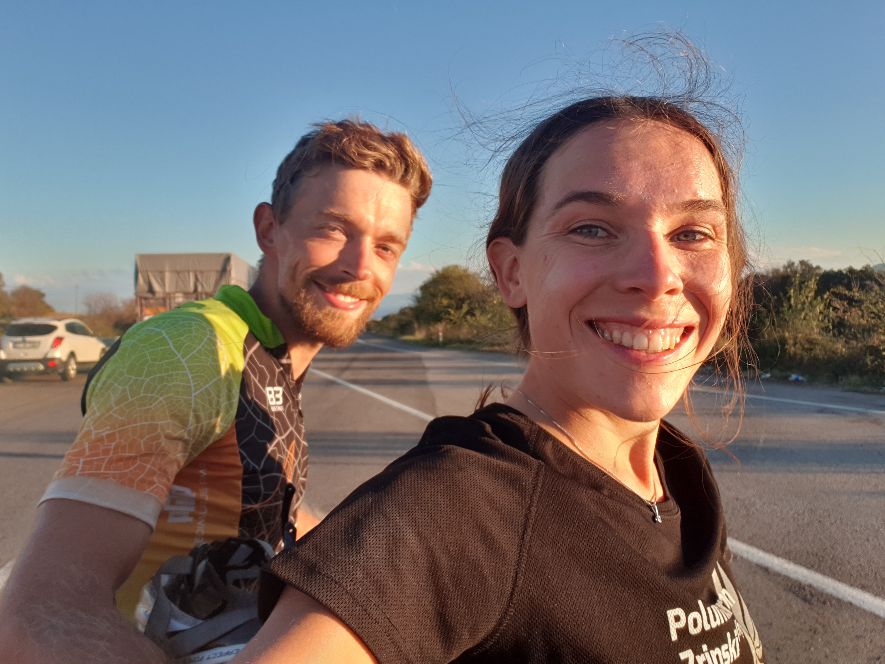

O nama, ljubavi i biciklima
Bok!
Mi smo Nina i Igor. 23ogodišnji studenti iz malog (najljepšeg) Međimurja. Veliki smo zaljubljenici u trčanje i bicikliranje. U suradnji s našim ljubimcima na dva kotača Pablom i Fionom ostvarujemo svoje snove putujući svijetom.
Tamo gdje ljubav počinje
Jednom kada probaš putovati biciklom više nema nazad... Naravno, jednom je trebalo biti prvi puta i odvažiti se na ovakav pothvat. Igor ovdje uvelike vodi Ninu, on je počeo putovati već s 18 godina. Još kao klinac obećao je svom ujaku u Crnoj Gori da će ga jednog dana posjetiti biciklom. Tvrdoglav kakav je, prvom prilikom ispunio je svoje obećanje prošavši 800 kilometara od Pule do Herceg Novog. Godinu dana kasnije hrabro se uputio u avanturu od mjesec dana, otpedalirao je oko 3000 kilometara kroz zemlje središnje Europe.
S druge strane, za Ninu bicikl nije predstavljao ništa više od prijevoznog sredstva do škole ili atletske staze. Prohodavši s Igorom, na njegov nagovor, kupila je cestovni bicikl i počela otkrivati ljepote biciklizma. Zajedničko putovanje 2020. godine u kojem smo u 5 dana odbiciklirali Kvarnerske otoke (Krk, Cres i Lošinj) bilo je test da vidimo hoće li se Nini ovakav način putovanja svidjeti i hoće li izdržati. Osim samog bicikliranja, trebalo se naviknuti i na kampiranje u prirodi što je Nini do tad također bila velika nepoznanica. Ruta je bila zahtjevna i nije sve bilo bajno, ali putovanje je ipak bilo uspješno. Tada smo bili sigurni da ćemo putovati i sljedeće ljeto, samo je bilo pitanje destinacije.
Ljubimac na dva kotača
Zašto za svoje putovanje izabrati bicikl? Zato što bicikl omogućava da živimo baš svaki trenutak. Na njemu se osjeti svako brdo, kamenčić, ubere se putem puno zrelih voćki i izmami se puno više osmjeha nego u autu. Putovanje se ne bazira samo na finalnoj destinaciji već je svaki kilometar cilj sam za sebe. Tako istinski živimo poslovicu „sreća je put, a ne cilj“.
Cijeli svijet u dvije torbe
Prilikom pakiranja treba imati na umu da što god staviš u torbu morat ćeš to voziti 2000 km i uzbrdo i u vjetar. Tim načinom razmišljanja lako se minimalizira sva potrebna kozmetika, odjeća i oprema. Generalno, jednom kad se navikneš nije problem voziti torbe. Na početku treba biti strpljiv i zaboraviti na brze vožnje cestovnim biciklom - ovdje je zabranjeno pratiti vrijeme, brzinu, prosjek i watte. Problem je voziti uzbrdo, međutim nekako si to uspijemo u glavi postaviti kao dobar trening... Sa sobom nosimo set za kampiranje, set za kuhanje, alat za bicikle s rezervnim zračnicama, set za higijenu i par odjevnih kombinacija za vožnju i grad. Hranu kupujemo iz dana u dan kako bismo bili što lakši. I vjerujete nam, jednom kad se prebacite u mood putnika biciklista i snizite trenutne kriterije zaista vam ne treba mnogo.
Divni ljudi putem
Najdraži dio putovanja za nas je definitivno upoznavanje lokalaca i putnika biciklista na ruti. Bez tog djela smatramo da ne bismo u potpunosti doživjeli mjesto. Kada smo na biciklu automatski su ljudi prema nama ljubazniji i pristupačniji, a i mi smo mnogo otvoreniji nego inače. Primjerice, u mjestu Prozor u BiH okupljeno društvo pozvalo nas je da s njima popijemo pivu i pojedemo roštilj. Na kraju smo zajedno pjevali, svirali, sprijateljili se, skoro tamo i ostali. Mjesto Prozor samo po sebi vjerojatno bismo zaboravili uskoro, međutim zbog društva pamtit ćemo ga zauvijek. Isto tako, poseban je osjećaj sresti se s drugim biciklistima. Gotovo uvijek susret bude puno više od običnog pozdrava, nakon toga nastavljamo voziti zajedno - mnogi od njih putuju posve sami pa budu presretni dio puta voziti u zavjetrini. Obožavamo slušati njihove priče. To definitivno nisu spike iz svakodnevnog života, no nešto je ipak zajedničko većini njih. Nakon dugogodišnje rutine oni se odluče promijeniti svoj život do srži putovanjem oko svijeta (što se zapravo svede na otkrivanje samog sebe). Mnogi od njih odlaze na ture po pola godine, godinu dana pa sve do pet godina. I kako nakon takvih razgovora ostati ravnodušan? Tako punimo baterije, motiviramo se i naučimo nešto novo. Slušajući o višegodišnjim turama, naša tura od (samo) 25 dana čini se tek kao uvod u nešto veće u budućnosti.